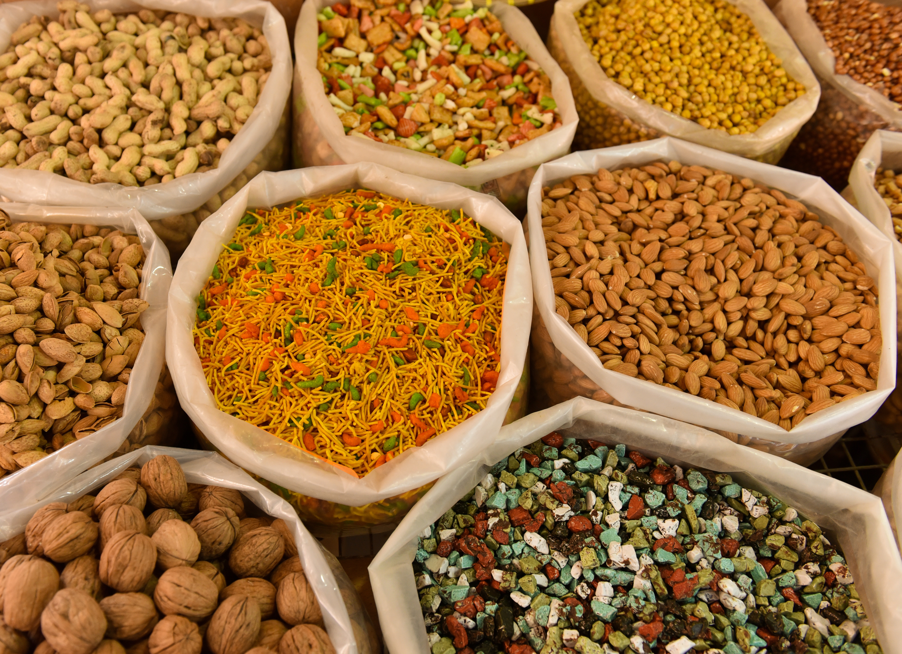

Welcome to Healthy Recipes
We provide a wide range of healthy and delicious recipes to help you maintain a balanced diet and improve your health.
Breakfast Snacks
- Hard-boiled eggs
- Greek yogurt with fruit
- Trail mix
Hard-boiled eggs are a great source of protein and healthy fats. They're also portable and easy to eat on the go. To make hard-boiled eggs, simply place eggs in a saucepan and cover with cold water. Bring the water to a boil, then cover the pan and remove from heat. Let the eggs sit in the hot water for 10-12 minutes, then drain and rinse with cold water. Peel and enjoy!

Greek yogurt is a great source of protein and calcium. It's also low in sugar and fat. To make a healthy breakfast snack with Greek yogurt, simply combine 1/2 cup of Greek yogurt with 1/2 cup of fresh fruit. You can also add a drizzle of honey or maple syrup for sweetness.
Trail mix is a great way to get a variety of nutrients in one snack. It's typically made with nuts, seeds, dried fruit, and chocolate chips. To make your own trail mix, simply combine your favorite ingredients in a bowl. You can adjust the proportions to your liking.
These are just a few ideas for healthy breakfast snacks. There are many other possibilities, so get creative and find what you like best!